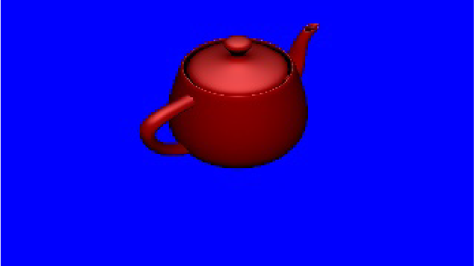

Demonstrate 3D rendering using Vulkan
Syntax:
vk-teapot [options]
Vulkan options:
- -composite=composite_value
-
Use alpha compositing through Vulkan WSI. Alpha compositing combines the image with it's
background to create the appearance of partial or full transparency. You can choose from the following options:
- 0 - VK_COMPOSITE_ALPHA_OPAQUE_BIT_KHR: If the alpha component is present, it is ignored and is treated as
a constant value of 1.0 (opaque). This is the default.
- 1 - VK_COMPOSITE_ALPHA_INHERIT_BIT_KHR: Vulkan APIs are unaware of how the presentation engine treats the alpha
component in the images. In this setting, the application is responsible for setting the composite alpha blending mode, by
using native window system commands. If the application does not set the blending mode, a platform specific default is used.
You can combine this option with the -transparency option.
- 2 - VK_COMPOSITE_ALPHA_POST_MULTIPLIED_BIT_KHR: If the alpha component is present, it is used in the compositing process.
The compositor multiplies the non-alpha component of the image with the alpha component during composition.
- 3 - VK_COMPOSITE_ALPHA_PRE_MULTIPLIED_BIT_KHR: If the alpha component is present, it is used in the compositing process.
Your application needs to multiply the non-alpha component with the alpha component.
- -gpu=gpu_index
-
Use gpu_index to specify the GPU to use. If this option is not set, the default is -1.
auto-detect the fasted GPU (index is -1).
- -nbuffers=count
- Set the number of window buffers to be created for rendering. Use an integer from 2 to the
maximum buffer limit of your driver. The default is 3.
- -present= mode
-
Set the presentation mode. Chose from the following:
- 0 - VK_PRESENT_MODE_IMMEDIATE_KHR
- 1 - VK_PRESENT_MODE_MAILBOX_KHR
- 2 - VK_PRESENT_MODE_FIFO_KHR (default)
- 3 - VK_PRESENT_MODE_FIFO_RELAXED_KHR
If you set both this option and -interval, the last specified option is used.
- -validate
Enable any installed validation layers.
- -verbose
- Print information to display.
Screen options:
- -bg-alpha=background_alpha_value
-
Set the background to the specified alpha value as a float in the range [0.0f..1.0f].
The default is 0.0f.
- -display=display_id
-
Specify which display the window will appear on by using display_id.
Where display_id is an integer that identifies one of the displays
that you've configured in the display
subsections of the winmgr section in your configuration file (e.g., graphics.conf).
If you don't have any display subsections
configured, or if you don't specify the display option, then vk-teapot uses the default display.
- -fg-alpha=foreground_alpha_value
-
Set the foreground to the specified alpha value as a float in the range [0.0f..1.0f]. The default is 1.0f.
- -format=pixel_format
-
Set the window pixel format. Supported formats are:
- rgb565 - SCREEN_FORMAT_RGB565
- rgba5551 - SCREEN_FORMAT_RGBA5551
- rgbx5551 - SCREEN_FORMAT_RGBX5551
- rgba8888 - SCREEN_FORMAT_RGBA8888
- rgbx8888 - SCREEN_FORMAT_RGBX8888
- bgra8888 - SCREEN_FORMAT_BGRA8888
- bgrx8888 - SCREEN_FORMAT_BGRX8888
- rgba1010102 - SCREEN_FORMAT_RGBA1010102
- rgbx1010102 - SCREEN_FORMAT_RGBX1010102
- bgra1010102 - SCREEN_FORMAT_BGRA1010102
- bgrx1010102 - SCREEN_FORMAT_BGRX1010102
If you do not set this option, Screen uses the format of the window's framebuffer.
If the framebuffer's format is not supported by Vulkan, vk-teapot will abort.
- -frame-limit=frame_limit
-
Limit the number of frames rendered to the value specified by frame_limit (integer);
after the frame limit is reached, vk-teapot exits.
The default is an unlimited number of frames (-1).
- -interval=mode
-
Set the presentation mode. Chose from the following:
- 0 for VK_PRESENT_MODE_IMMEDIATE_KHR
- 1 for VK_PRESENT_MODE_FIFO_KHR
If you do not set this option, Screen uses the value or default of -present_mode.
If you set this option and -present, the last specified option is used.
- -material=material_id
-
Set the color and material of the rendered teapot. You can select from the following list:
- 0 — Emerald
- 1 — Jade
- 2 — Obsidian
- 3 — Pearl
- 4 — Ruby
- 5 — Turquoise
- 6 — Brass
- 7 — Bronze
- 8 — Chrome
- 9 — Copper
- 10 — Gold
- 11 — Silver
- 12 — Black plastic
- 13 — Cyan plastic
- 14 — Green plastic
- 15 — Red plastic
- 16 — White plastic
- 17 — Yellow plastic
- 18 — Black rubber
- 19 — Cyan rubber
- 20 — Green rubber
- 21 — Red rubber
- 22 — White rubber
- 23 — Yellow rubber
If you don't specify the material option, vk-teapot uses 15 (red plastic).
- -pipeline=pipeline_id
-
Set the pipeline as specified by pipeline_id (integer).
If you don't specify this option, vk-teapot uses the pipeline of the framebuffer.
If you use this option, Screen applies
the SCREEN_USAGE_OVERLAY usage flag and uses the pipeline specified by
pipeline_id.
- -pos=x,y
- Sets the x,y coordinates of the viewport.
The default coordinate of 0,0 is used if this option isn't specified.
- -size=widthxheight
-
Set the size as specified, using integer values for width and height in pixels, of the viewport.
The default size is fullscreen.
- -tess=tessellation_level
-
Set the tessellation level of the teapot. The minimum level is 1 and the default is 25.
- -transparency=transparency_mode
-
Set the transparency mode of the window. Valid transparency modes are:
| Transparency mode |
Description |
| none |
Default mode; result is an opaque window |
| test |
Destination pixels are replaced by source pixels; pixels may be
opaque or fully transparent
|
| src |
Destination pixels are replaced by source pixels, including the alpha channel;
window will be blended with contents underneath it
|
- -wireframe
- Render a wireframe teapot instead of a solid teapot.
- -zorder=zorder
-
Set the z-order specified by zorder, as an integer, of the window.
A z-order of 0 is used if this option isn't specified.
Description:
The vk-teapot binary is a command-line tool that can be used to confirm that
screen is running, and that all necessary drivers for Vulkan are in place,
and can start successfully.
To control vk-teapot, use the following keys:
- ESC - Quit the demo
- F - Pause/resume the demo
- Space - Cycle to the next material on the list
Examples:
# vk-teapot
